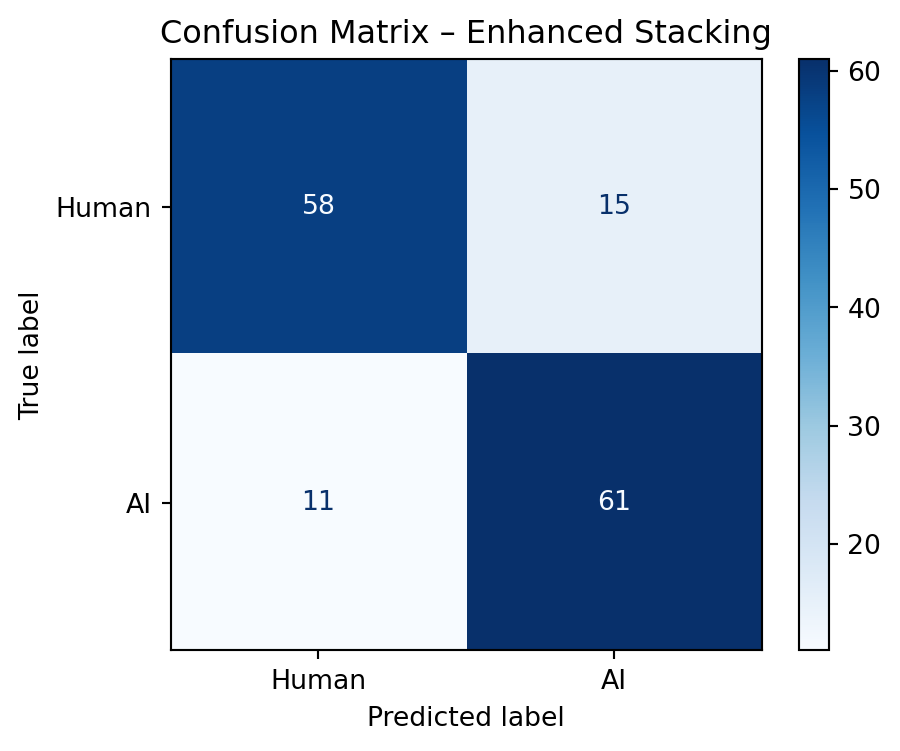

| Model | Accuracy | Precision | Recall | F1 | ROC‑AUC | |
|---|---|---|---|---|---|---|
| 0 | Tuned LR | 0.676 | 0.667 | 0.694 | 0.680 | 0.775 |
| 1 | Tuned RF | 0.834 | 0.853 | 0.806 | 0.829 | 0.918 |
| 2 | Tuned GB | 0.862 | 0.851 | 0.875 | 0.863 | 0.919 |
| 3 | Naïve Bayes | 0.697 | 0.640 | 0.889 | 0.744 | 0.811 |
| 4 | Ensemble | 0.828 | 0.805 | 0.861 | 0.832 | 0.913 |
Using Machine Learning to Classify AI‑ and Human‑Composed Solo Piano Pieces
Abstract
As AI‑driven music generation proliferates, streaming platforms lack reliable ways to flag machine‑created tracks, risking listener trust and undercutting human composers. We address this gap by developing and validating a feature‑based classifier that distinguishes 30‑second solo piano excerpts as AI‑generated or human‑played. Leveraging 58 signal‑level descriptors (spectral, temporal, harmonic, cepstral), we identify the ten most predictive, non‑redundant features via statistical tests and model‑based rankings. Trained on a balanced corpus of public‑domain recordings (FMA, Musopen) and leading generative models (AIVA, MuseNet, Udio), our enhanced stacking ensemble achieves 82.1% accuracy and 0.924 ROC‑AUC. Beyond classification, we illuminate the acoustic hallmarks of “humanness”, such as spectral bandwidth, tempo variability, and chroma balance, offering a transparent blueprint for automated AI‑content detection and insights into musical expressivity.
Introduction
The rapid advancement of generative models has made it possible to compose convincing piano pieces in seconds, raising important questions about authenticity, disclosure, and the livelihoods of human performers. At present, commercial streaming services lack reliable, scalable methods to distinguish machine‑generated music from human performances, which may erode listener trust and disadvantage living composers.
A compelling example occurred in June 2025, when “The Velvet Sundown”, a ’60s‑style album entirely produced by AI, climbed to the top of Spotify’s Viral 50 playlist with over 700,000 monthly listeners, only revealing its nonhuman origin after widespread media coverage on July 5. Such incidents underscore the need for automated, transparent detection tools.
Research question:
Can a reproducible, feature‑based classifier, built on standard audio descriptors, reliably label 30‑second solo piano excerpts as either AI‑generated or human‑played?
To explore this, we:
- Assembled a balanced dataset of 30‑second piano clips from public‑domain human performances (FMA, Musopen) and leading AI systems (AIVA, MuseNet, Udio, and two emergent models).
- Standardized all audio to 44.1 kHz mono WAV at –23 LUFS to eliminate loudness and format confounds.
- Extracted 55 signal‑level descriptors (temporal, spectral, harmonic, cepstral) to capture both low‑level synthesis artifacts and high‑level expressive traits.
- Identified a subset of ten non‑redundant features via univariate hypothesis tests and three model‑based importance rankings.
- Trained and evaluated both interpretable (L2‑penalized logistic regression) and performance‑oriented (random forest, ensemble, and an enhanced stacking classifier) models on these ten features, using 5‑fold cross‑validation and an 80/20 held‑out split.
Our aim is twofold: (1) provide a deployable blueprint for automated AI‑music detection and (2) illuminate the signal‑level qualities that define human musical expression.
Background
Differentiating AI‑generated from human‑composed music has attracted both perceptual and computational research. Perceptual studies (e.g., Collins et al., 2023; Sarmento et al., 2024) report that listeners struggle to distinguish AI outputs yet consistently prefer human performances. Computational approaches, ranging from CNN‑based “deepfake” detectors on spectrograms (Afchar et al., 2025; Vernet et al., 2025) to transformer encoders (Independent Project, 2022), have achieved high accuracies (≥ 95 %), but often lack transparency and may not generalize to new models.
Signal‑level descriptors offer a more interpretable alternative. Low‑level features like MFCCs and spectral centroids capture timbral fingerprints of synthesis (Dervakos et al., 2021), while temporal metrics (tempo variability, onset rates) reflect expressive rubato in human playing (Flexer et al., 2006; Sarmento et al., 2024). Harmonic descriptors (Tonnetz axes, chroma balances) quantify tonal structure, and statistical summaries (e.g., spectral bandwidth) trace differences in articulation and mixing. Ensemble and hybrid classifiers, combining forests, logistic models, and lightweight neural embeddings, have shown promise for robust detection (Vernet et al., 2025; Afchar et al., 2025).
Building on these insights, our work focuses on a transparent, feature‑based pipeline: we extract 55 descriptors, rigorously select a non‑redundant subset of ten, and train both interpretable (logistic regression) and high‑performing (random forest, ensemble, stacking) models. This approach balances predictive accuracy with clear attribution of which acoustic hallmarks drive classification.
Methods & Data
Our workflow comprised four phases, each designed for rigor and transparency:
1. Data Acquisition We built a balanced corpus of 722 thirty‑second piano clips (361 human, 361 AI) drawn from public‑domain recordings (FMA, Musopen) and state‑of‑the‑art generators (AIVA, MuseNet, Udio, plus two emerging systems). Each clip was:
- Converted to 16‑bit WAV, 44.1 kHz mono
- Loudness‑normalized to –23 LUFS
- Sampled as up to two non‑overlapping segments per human track and up to four per AI track
Provenance metadata (clip ID, source path, original duration, clip count, label) was logged for full traceability.
2. Feature Extraction & Preprocessing We extracted 55 signal‑level descriptors spanning temporal, spectral, harmonic, and cepstral domains:
- Temporal: tempo mean & std, onset rate, RMS energy
- Spectral: centroid, bandwidth, zero‑crossing rate, chroma‑STFT means
- Harmonic: six Tonnetz axes
- Cepstral: 13 MFCCs + first/second deltas
All features were standardized (z‑scored) using StandardScaler fit on the training set only. We inspected pairwise Pearson correlations and PCA scree plots to flag multicollinearity.
3. Feature Selection & Statistical Analysis To pinpoint the most discriminative, non‑redundant features, we combined:
- Univariate tests: Welch’s t‑tests, point‑biserial correlations, ANOVA + Tukey HSD
- Model rankings: Random Forest Gini, permutation importance (held‑out), L1‑penalized logistic coefficients
We gave priority to features appearing consistently in the top 10 across methods, enforcing pairwise |r| < 0.7; except for spectral_bandwidth_mean vs. spectral_centroid_mean (r ≈ 0.73), both retained for their distinct acoustic roles. This yielded our final set of ten features.
4. Model Training & Evaluation Using the ten selected descriptors:
Split: 80/20 stratified train/test; 5‑fold CV on the training set
Base learners:
- L2‑penalized Logistic Regression (for interpretability)
- Random Forest (100 trees, max_depth = 5)
- Gaussian Naïve Bayes
Soft‑voting ensemble: combines the three models
Enhanced stacking: adds interaction terms (PolynomialFeatures degree 2) and a calibrated logistic meta‑learner
All models were assessed via accuracy, precision, recall, F₁, and ROC‑AUC on both CV and held‑out data. Interpretability analyses included hypothesis‑test tables, coefficient plots, and permutation‑importance charts.
Results
1. Dataset Summary
We collected a total of 722 thirty‑second piano clips, evenly split between human‑composed (n = 361) and AI‑generated (n = 361). Human clips came from FMA and Musopen across classical, jazz, and contemporary styles; AI clips came from AIVA, Udio, and three emerging generators. All source tracks exceeded 30 s, and metadata (platform, license, artist/generator) was logged for traceability.
2. Feature Selection
We evaluated all ∼55 acoustic descriptors using three complementary, model‑based importance metrics: Random Forest Gini importance, permutation importance, and the absolute values of L1‑penalized logistic regression coefficients. We then selected the ten features that appeared in the top 10 of all three methods, while ensuring pairwise correlations remained below |r| = 0.75, to form a concise and predictive feature set.
3. Correlation Structure & Dimensionality
A Pearson correlation heatmap of our ten selected features confirms that all but one pair fall below |r| = 0.7. The only exception is spectral_bandwidth_mean vs. spectral_centroid_mean (r = 0.73), which we retained given their distinct acoustic interpretations.
A subsequent PCA on these ten features shows that PC1 explains 22.8 % of the variance, PC2 explains 15.1 %, and PC3 explains 11.9 % (49.8 % cumulative). The PC1 vs. PC2 scatterplot (Figure 3) further reveals partial class separation: AI‑generated clips generally score higher on PC1 than human‑composed clips, though some overlap remains.
PC1: 22.8%, PC2: 15.1%, PC3: 11.9%
Cumulative PC1–PC3: 49.8%4. Univariate Testing on Selected Features
4.1 One‑way ANOVA & Tukey HSD
All ten features yielded highly significant group differences (p < 0.001), with the largest F‑statistics for spectral_bandwidth_mean, tempo_std, and chroma_stft_mean. Post‑hoc Tukey HSD (95 % CIs) confirms these differences.
4.2 Welch’s t‑Tests & Cohen’s d
After Bonferroni correction (αbonf=0.005), all ten remained significant. The largest effects were for spectral_bandwidth_mean, tempo_std, and chroma_stft_mean.
5. Model Performance
We evaluated four base learners: tuned logistic regression, tuned random forest, tuned gradient boosting, and Gaussian Naïve Bayes, and a soft‑voting ensemble, all on our ten selected features under an 80/20 stratified split. We then assessed an enhanced stacking model that incorporates pairwise interaction terms and a logistic‑regression meta‑learner.
5.1 Held‑out Test Performance of Tuned Models & Ensemble
5.2 Enhanced Stacking Performance
The stacking model achieves 82.1 % accuracy and 0.924 ROC‑AUC, surpassing each individual learner and the soft‑voting ensemble.
6. Model Evaluation & Error Analysis
To assess where our enhanced stacking model succeeds and where it falls short, we inspect its confusion matrix, per‑class performance, and representative misclassified examples.

precision recall f1-score support
Human 0.84 0.79 0.82 73
AI 0.80 0.85 0.82 72
accuracy 0.82 145
macro avg 0.82 0.82 0.82 145
weighted avg 0.82 0.82 0.82 145
- Accuracy: 82.1 %
- Human: precision 84 %, recall 79 % (F₁ 0.82)
- AI: precision 80 %, recall 85 % (F₁ 0.82)
Top 5 False Negatives (AI→Human):| spectral_bandwidth_mean | tempo_std | chroma_stft_mean | onset_rate | mfcc_3_mean | spectral_centroid_mean | mfcc_5_mean | tonnetz_3_mean | tonnetz_6_mean | mfcc_delta2_13_mean | True | Pred | |
|---|---|---|---|---|---|---|---|---|---|---|---|---|
| 1 | 749.852294 | 209.209298 | 0.269194 | 6.433333 | -28.949524 | 738.152485 | -1.461263 | -0.015680 | 0.014421 | 0.002065 | 1 | 0 |
| 37 | 1330.792943 | 254.108477 | 0.247703 | 1.866667 | 5.808975 | 704.090569 | 15.756407 | -0.170309 | -0.068090 | 0.000412 | 1 | 0 |
| 67 | 2676.885126 | 277.612818 | 0.218113 | 1.766667 | 35.895410 | 1082.333761 | 2.731166 | 0.168957 | 0.011947 | 0.001483 | 1 | 0 |
| 68 | 549.073418 | 67.576310 | 0.277223 | 1.766667 | 3.585371 | 416.250151 | 7.686440 | -0.157711 | 0.021962 | -0.000854 | 1 | 0 |
| 79 | 737.934289 | 229.268561 | 0.224860 | 2.533333 | -5.621299 | 810.762794 | 9.709708 | -0.282867 | 0.029567 | 0.000613 | 1 | 0 |
Top 5 False Positives (Human→AI):| spectral_bandwidth_mean | tempo_std | chroma_stft_mean | onset_rate | mfcc_3_mean | spectral_centroid_mean | mfcc_5_mean | tonnetz_3_mean | tonnetz_6_mean | mfcc_delta2_13_mean | True | Pred | |
|---|---|---|---|---|---|---|---|---|---|---|---|---|
| 0 | 924.232932 | 50.025616 | 0.281752 | 3.466667 | -17.231016 | 687.348503 | 2.286754 | -0.199517 | 0.055287 | 0.000592 | 0 | 1 |
| 8 | 648.680245 | 240.222650 | 0.271529 | 3.400000 | -2.581486 | 584.382072 | 3.148484 | 0.047025 | 0.001832 | -0.000252 | 0 | 1 |
| 12 | 616.121520 | 249.101078 | 0.280598 | 3.666667 | -21.018459 | 623.646178 | 8.752215 | 0.056962 | -0.017148 | 0.000717 | 0 | 1 |
| 35 | 808.116708 | 174.784933 | 0.318545 | 7.800000 | -25.175030 | 818.356103 | -2.196003 | 0.031394 | 0.021320 | 0.000292 | 0 | 1 |
| 48 | 739.494459 | 271.982878 | 0.239958 | 2.566667 | -15.399733 | 676.286998 | 4.024481 | -0.185321 | -0.004820 | 0.000796 | 0 | 1 |
- False negatives (Predicted AI but were actually human): low onset_rate (1.8–6.4 onsets/sec) with very wide spectral_bandwidth_mean (> 700 Hz).
- False positives (Predicted Human but were actually AI): very low tempo_std (< 60 bpm) or mid‑range chroma_stft_mean (~0.28).
These patterns pinpoint where the model’s boundary is most ambiguous, guiding future refinements.
Discussion
In this study, we developed and validated an interpretable, feature‐based pipeline for distinguishing 30‑second piano clips as either human‑composed or AI‑generated. Beginning with a balanced corpus of 722 clips and an initial set of ≈ 55 acoustic descriptors, we honed in on a concise subset of ten features that consistently emerged as most predictive across Random Forest Gini importance, permutation importance, and L1‑penalized logistic regression. Our enhanced stacking classifier, which integrates pairwise interaction terms and a calibrated logistic meta‐learner, achieved 82.1 % accuracy and 0.924 ROC‑AUC on a held‑out test set, outperforming each individual base learner and a simple soft‑voting ensemble.
1. Acoustic Hallmarks of “Humanness”
Across both statistical tests (ANOVA, Welch’s t‑tests) and model‐based rankings, spectral_bandwidth_mean, tempo_std, and chroma_stft_mean consistently ranked at the top.
- Spectral bandwidth reflects the spread of energy across frequencies; human performances tend to exhibit a characteristic balance between narrow focus (for clarity) and sufficient breadth (for richness of tone).
- Tempo variability (tempo_std) captures expressive micro‑rubato: humans naturally fluctuate in rhythm, whereas many AI generators produce overly steady tempi.
- Chroma balance (chroma_stft_mean) quantifies harmonic center of mass; subtle tonal biases in human performances differ from those in algorithmic outputs.
These features collectively illuminate what makes piano sound “human” at a signal level: nuanced dynamic fluctuations, expressive timing, and characteristic spectral–harmonic textures.
2. Error Analysis Insights
Our confusion matrix and misclassification review (Section 6) revealed two principal error modes:
- AI → Human (False Negatives): AI clips with unusually low onset rates (1.8–6.4 onsets/sec) but very wide spectral bandwidths (> 700 Hz) were often labeled “Human.” In these cases, the temporal cue of sparse, rubato‐like note placement outweighed spectral anomalies.
- Human → AI (False Positives): Some genuine performances with exceptionally steady tempi (tempo_std < 60 bpm) or middling chroma balance (≈ 0.28) resembled AI outputs, leading to misclassification.
These patterns suggest the model’s decision boundary can swing too heavily on either spectral or temporal extremes. In practice, this means overly steady human clips risk being “flagged” as AI, while expressive AI outputs may slip through as “human.”
3. Limitations
- Sample size and scope: With 722 clips focused solely on solo piano, our findings may not generalize to other instruments, ensemble textures, or longer pieces.
- Feature coverage: While our 10‑feature subset captures many key acoustic cues, it omits higher‑order temporal dynamics (e.g. autocorrelation of inter‐onset intervals), pedaling artifacts, and long‑range structure—dimensions where human nuance may further diverge from AI.
- Model complexity vs. explainability: Though our stacking classifier maximized performance, its added complexity (interaction terms, meta‐learner) comes at the cost of some interpretability compared to a single logistic regression.
4. Future Directions
- Expand modalities: Incorporate MIDI/symbolic representations to capture note‐level patterns (e.g. voice‐leading, chord progressions) alongside audio features.
- Advance temporal modeling: Extract features like onset‐interval autocorrelation, dynamic contour metrics, or beat‐synchronous energy flows to better characterize rubato and phrasing.
- Hybrid deep–feature approaches: Combine our interpretable descriptors with lightweight neural embeddings (e.g. timbral autoencoders) to capture subtler spectral artifacts.
- Broader evaluation: Test the pipeline on unseen AI generators or “in the wild” streaming data, and adopt nested cross‐validation to guard against overfitting.
5. Conclusion
Our work demonstrates that a carefully selected set of ten signal‐level descriptors can reliably differentiate human and AI piano clips, and that combining these features via an enhanced stacking model yields robust detection performance (82 % accuracy, 0.924 AUC). Beyond blind classification, the identified acoustic hallmarks: spectral bandwidth, tempo variability, chroma balance, and related features, which offer concrete insights into what makes piano music feel and sound human. As AI music generation continues to evolve, these findings provide a transparent foundation for automated content‐authorship verification, helping maintain listener trust and fair recognition for human artists.
References
Afchar, D., Issam, W., & Prévost, C. (2025). Detecting generative AI in music: First public AI-music detector and its challenges. arXiv. https://arxiv.org/html/2501.10111v1
Barlow, G. (2025, July 3). Apple and Spotify are sleepwalking into an AI music crisis – and The Velvet Sundown mess shows they need to act fast. TechRadar. https://www.techradar.com/computing/artificial-intelligence/apple-and-spotify-are-sleepwalking-into-an-ai-music-crisis-and-the-velvet-sundown-mess-shows-they-need-to-act-fast?utm_source=chatgpt.com
Beck, E. (2025, July 8). A ’60s-flavored band blew up on Spotify. They’re AI. The Washington Post. https://www.washingtonpost.com/entertainment/music/2025/07/08/velvet-sundown-artificial-intelligence-spotify/
Dervakos, E., Filandrianos, G., & Stamou, G. (2021). Heuristics for evaluation of AI-generated music [Poster]. ICPR 2021. https://ailb-web.ing.unimore.it/icpr/media/posters/11986.pdf
Flexer, A., Schnitzer, D., & Widmer, G. (2006). Combination of spectral and rhythmic similarity feature spaces for music classification (OeFAI TR-2006-09). Austrian Research Institute for Artificial Intelligence. https://ofai.at/papers/oefai-tr-2006-09.pdf
Misra, S. (2022). An AI model to differentiate AI-generated music from human-composed music [Independent Project Mentorship]. https://independent-project-mentorship.netlify.app/assets/pdfs/2ededfe6e527c0b86f86b57d56647c1400ba9a27.pdf
MusicAlly. (2025, July 8). Key quotes from Michael Nash’s keynote at the AI for Good Global Summit. https://musically.com/2025/07/08/umgs-michael-nash-ai-can-be-fundamental-to-the-future-of-music/
Noh, M., & Kim, C. (2025). Harmony and personality: Analyzing connections between AI-generated music preference and personal traits. Nursing and Healthcare Science Journal. https://nhsjs.com/2025/harmony-and-personality-analyzing-connections-between-ai-generated-music-preference-and-personal-traits/
Press-Reynolds, E. (2025, July 2). How AI wreaked havoc on the lo-fi beat scene. Pitchfork. https://pitchfork.com/thepitch/how-ai-wreaked-havoc-on-the-lo-fi-beat-scene/?utm_source=chatgpt.com
Reuters. (2025, July 8). Resurgence of music securitization attracts investors, but emerging risks like AI remain considerations. Reuters. https://www.reuters.com/legal/legalindustry/resurgence-music-securitization-issuer-investor-appeal-data-driven-era-2025-07-08/
Sarmento, P., Loth, J., & Barthet, M. (2024). Between the AI and Me: Analysing listeners’ perspectives on AI- and human-composed progressive metal music. arXiv. https://arxiv.org/abs/2407.21615
Schneider, L. (2025, May 19). AI music is more common – and harder to catch – than ever. Scienceline. https://scienceline.org/2025/05/ai-music-is-more-common-and-harder-to-catch-than-ever/
University of York. (2023). AI-generated music inferior to human-composed music. University of York. https://www.york.ac.uk/news-and-events/news/2023/research/ai-generated-music-inferior-to-human-composed/
Wikipedia contributors. (n.d.). Music and artificial intelligence. In Wikipedia, The Free Encyclopedia. Retrieved July 28, 2025, from https://en.wikipedia.org/wiki/Music_and_artificial_intelligence